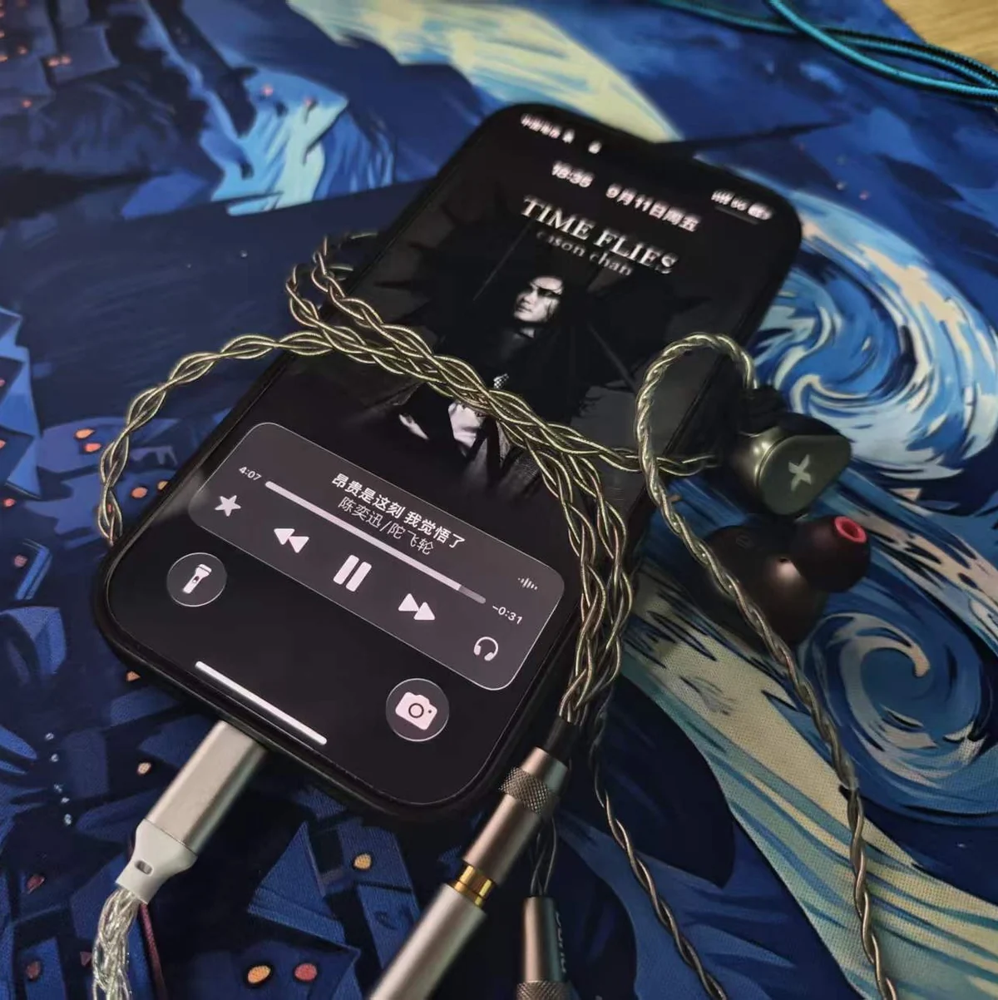

构建BUILD
软件 · 人工智能 · 个人项目 Software · AI · Projects
01 / 首页Home
电子信息工程专业学生 Electronic Information Engineering Student
人工智能 / 编程 / 模拟赛车 / 音频 AI / Coding / Sim Racing / Hi-Fi
我喜欢先把想法做出来，再慢慢把它做好。 I like making a first version, then making it better.
构建BUILD 驾驶DRIVE 聆听LISTEN
02 / 赛车Racing
模拟赛车 / 自动驾驶 Sim Racing / Autonomous Driving
基于 BeamNG 的自动驾驶实验项目，采用感知 / 决策 / 控制的分层架构，逐步演进到端到端模仿学习与图像强化学习。 An autonomous driving experiment on BeamNG, with a layered perception–decision–control architecture moving toward imitation learning.
从屏幕前的驾驶兴趣，到能自己跑完一圈的车辆控制代码。 From a racing interest in front of the screen to control code that can finish a lap.
Python · 计算机视觉 · 车辆控制 · BeamNG Python · Computer Vision · Vehicle Control · BeamNG
03 / 项目Projects
文字目录 + 项目实拍
悬停或聚焦查看对应画面
Text index + captures
Hover or focus to preview
04 / HI-FI
音乐 / 器材 / 聆听 Music / Audio / Listening
听得再近一点。 Listen closer.
音乐，是另一种关注细节的方式。 Music is another way of paying attention to details.


音频监听与可视化工具：自动采集电脑正在播放的声音，实时显示频谱与波形。 An audio monitoring and visualization tool: it captures what your computer is playing and renders spectrum and waveform in real time.
Python · WASAPI 环回采集 · FFT · NumPy · CustomTkinter Python · WASAPI loopback · FFT · NumPy · CustomTkinter
05 / 关于About
华南农业大学电子信息工程大二在读，现居广州。 Second-year Electronic Information Engineering student at South China Agricultural University, based in Guangzhou.
喜欢把技术、赛车和声音这些兴趣，做成真正能运行、能分享的东西。对人工智能、软件开发、仿真与音频都保持好奇。 I turn an interest in technology, racing and sound into things that actually run and can be shared — curious about AI, software, simulation and audio.
构建BUILD
软件 · 人工智能 · 个人项目 Software · AI · Projects
驾驶DRIVE
模拟赛车 · BeamNG · 自动驾驶 Sim Racing · BeamNG · Autonomous Driving
聆听LISTEN
音频 · 音乐 · 声音细节 Hi-Fi · Music · Audio
常用工具TOOLBOX
联系方式CONTACT